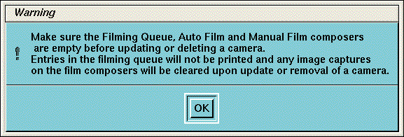
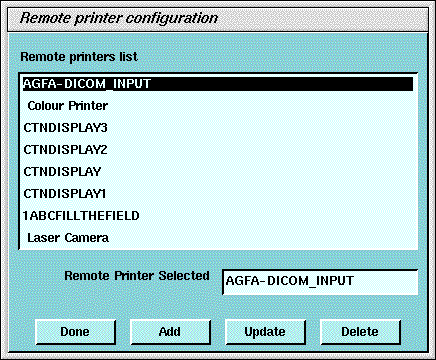
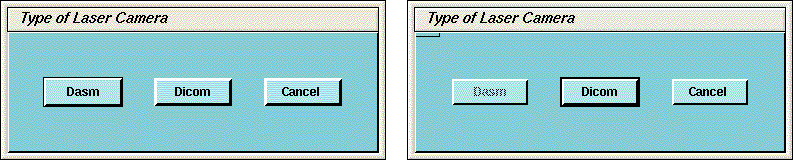
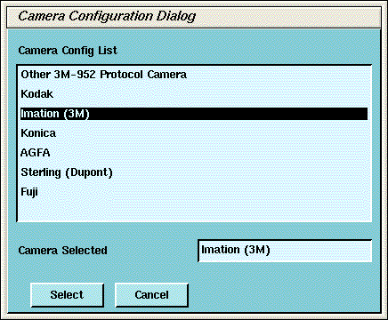
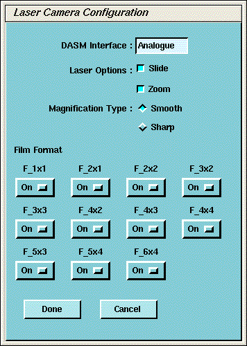
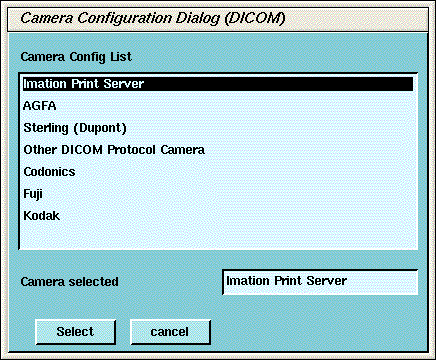
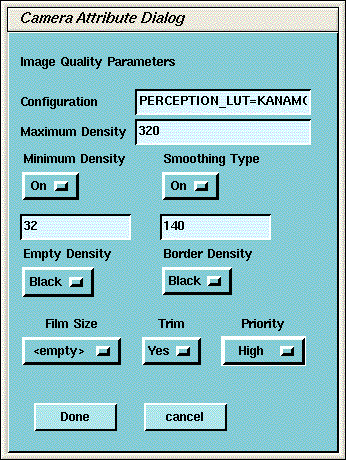

Operating Documentation
Direction 2378260-800, Rev# 10
GOC3 Service Methods (Adv)
Operating Documentation |
| Required Persons | Preliminary Reqs | Procedure | Finalization |
|---|---|---|---|
| 1 |
This module contains procedures for recording important Camera setup
information. Use the Camera Data Tables PDF to record information
from the setup screens. (To view the PDF, click on the PDF icon:  .)
.)
| Last Revised: | 03 November, 2003 |
| Potential For Data Loss Empty all filming queues before modifying camera parameters. | |
| NOTE: | Filmer DICOM Application Entity Titles may be site specific. Make sure that you check with the Filming Device Service Representative and the hospital network administrator to ensure you are using the correct AE Title for the destination filming device. |
| Condition | Reference | Eff |
|---|---|---|
Filming Device Service Representative to assist in camera/printer setup for best CT image quality film presentation. | - | - |
Hospital DICOM network is operational. | - | - |
Filming device is connected to the DICOM network with the correct filmer DICOM interface. | - | - |
Filming device is DICOM protocol compatible. | - | - |
Filming device DICOM Conformance Statement document is available. | - | - |
Click on the [Service Desktop] button.
On the Desktop Toolbar, select Utilities → Install → Install Camera. The Install Camera window appears, along with a warning message pop-up box, to remind you that all filming queues must be empty before you begin to update or delete a camera.
Click [OK] in the warning message box that appears. See Illustration 1.
Illustration 1: Warning Screen

The Graphical User Interface displayed shows a list of cameras installed (See Illustration 2).
To add a new camera, click the ADD button (See Illustration 2).
Illustration 2: Printer Configuration GUI

A dialog window for the camera type (DASM/DICOM) appears. If no DASM is detected during the OC boot, the [DASM] button will be disabled ( Illustration 3). If a DASM is present and has not been detected, reboot the OC and run the camera configuration tool again.
Illustration 3: Dialog Box for Camera Type (with and without DASM)

To add a new laser camera, click DASM in the camera type dialog box. This brings up a list of available camera models. Select the appropriate model form the list and click [SELECT] (See Illustration 4).
Illustration 4: Camera Model Dialog (with DASM)

If applicable, configure the new laser camera:
DASM Interface is automatically detected as either Analogue or Digital.
Two Laser Options are available for laser cameras: [Slides] and [Zoom] . Set this option only if the camera being installed supports slides and zoom. Setting the option allows it to be enabled or disabled at the application level.
Camera manufactures provide two (2) Magnification Type options for cameras. The [Smooth] resolution blurs the image, while the [Sharp] resolution makes the image pixels more pronounced. The default is smooth.
| NOTE: | To film good images, and have them look like images filmed by
other GE CT products, the following camera settings are suggested: Kodak: [Smooth] Dupont/Sterling: [Smooth] 3M/Imation (Laser Camera): [Sharp] 3M/Imation (Dry View): [Smooth] Agfa: [Smooth] |
Select the appropriate File Format. Select [On] from the drop down list boxes on the menu. Valid film formats are determined by the camera manufacture. IMATION for example, doesn’t support 4x4, 2x4 or 1x2 and AGFA does not support 2x4) The DICOM print convention designates film formats by column and row (e.g. 12 on 1 film is 3x4). When finished setting parameters, click on [Done] .
Illustration 5: Laser Camera Configuration

To add a new DICOM camera, click on [ADD] and then [DICOM] in the dialog box that appears.
A list of camera models appears (See Illustration 6). Select the appropriate model from the list and click [Select] . Clicking [Select ] presets all the parameters to that models except the Network parameters.
Illustration 6: Camera Model Dialog (DICOM)

| NOTE: | It is advised to recheck the preset information with the camera manufacturer’s representative. |
Selection of a different camera model clears the Image Quality parameters, because these are camera manufacturer dependent.
Enter the Network Parameters (See Illustration 7)
Device Name - A unique name used to identify the camera.
Host Name - DICOM print server host name, as defined by the hospital.
IP Address - DICOM print server IP address, as defined by the hospital.
AE Title - DICOM print server application entity title, as defined by the print server.
| NOTE: | You should consult the manufacturer's DICOM Conformance Statement. The Application Entity Title for the Camera may be site specific. Make sure that you check with the Camera Manufacturer’s Representative and the hospital network administrator to ensure you are using the correct AE Title for the destination DICOM Print Camera. |
TCP/IP Listen Port - DICOM print server TCP/IP listen port, as defined by the server. (You should consult the manufacturers DICOM Conformance Statement.)
Comments - Optional comments used by the DICOM print server.
Illustration 7: DICOM Camera Configuration

Medium Type specifies the type of film being used. Currently, only [Blue Film] and [Clear Film] are supported.
Set Destination to the final location for film output: either [Magazine] or [Processor] .
Orientation selects film orientation. Only [Portrait] is currently supported.
Set the Magnification Type. This parameter selects the algorithm used to interpolate pixels for proper film resolution. Set this parameter after consulting the camera manufacture to ensure optimal image quality. Choices are describe below:
None - No interpolation. This option is not supported by all cameras.
Replicate - Adjacent pixels are interpolated. This can result in "pixelized" images. (This algorithm is not normal preferred.)
Bilinear - A 1st order interpolation of pixels. Results in images usually described as blurred. (This algorithm is not normal preferred.
| NOTE: | For most Camera Manufacturers, the preferred selection is [Cubic] . |
Cubic - A 3rd order interpolation. Used with a large number of possible formulations. Camera manufactures define parameters called "smoothing type" to set coefficients used in this algorithm. The implementation of these "smoothing coefficients" is camera dependent.
Select the Standard Film Formats. Select the film format by choosing [ON] in the pull-down menu box located below each selection. See Illustration 7. Valid film formats are set by the camera manufacture. IMATION for example, doesn’t support 4x4, 2x4 or 1x2 and AGFA does not support 2x4) The DICOM print convention designates film formats by column and row (e.g. 12 on 1 film is 3x4).
After the camera has been configured, click the [Advanced] button. This creates the camera device file for you automatically and pops up the Advanced Parameters screen. See Illustration 8.
Illustration 8: Advanced Parameters (Camera Attribute Dialog)

| NOTE: | For more information on the proper settings for the following
parameters, please see the Camera’s DICOM Print Device Conformance Statement
or the Camera Manufacturer Representative. You may need to refer to a copy of the Conformance Statement as you are working with the Camera Manufacturer’s Representative, to correctly set up the DICOM Print Camera I/Q and Time-out Settings. |
Advanced camera parameters control the image quality of films.
Configuration - This parameter is camera manufacturer dependent as is typically used to specify the image contrast. The Configuration field may be up to 1024 characters long. The field will scroll automatically as text is entered. To review your entry, simply click and hold the middle mouse button, while the cursor is in the field, and drag the mouse towards the right (or left) as needed.
| NOTE: | Recommended Configuration Setting Values: Agfa Drystar (MG3000) -- PERCEPTION_LUT=KANAMORI (100) Imation Dryview (8700) -- LUT=0,7 Kodak Laser Printer 190 -- CS434\CN0\PD1.20 |
Smoothing Type - Set Smoothing Type to [ON] , and input the selected value. This parameter is used when the magnification type is CUBIC. It represents the coefficient for the image resolution algorithm. This parameter is camera manufacturer dependent, and should be re-verified with your radiology department.
| NOTE: | Recommended Smoothing Type Starting Values and Ranges appear in Table 1 |
Table 1: Recommended Smoothing Type Starting Values and Ranges
| Start Value | Range | |
| Agfa DryStar (MG3000) | 140 | 137-150 |
| Imation Dryview (8700) | 3 | 3-13 |
| Kodak Laser Printer 190 | Enhanced | Normal |
Minimum and Maximum Density - Used to set brightness of the images on film. The range of values is 0-4095, although the valid range for a specific camera is manufacture dependent. For Maximum Density, input the correct value into the text box. For Minimum Density, set it to [ON] and input the correct value in the text box.
| NOTE: | Recommended Minimum and Maximum Density Starting Values appear in Table 2 |
Table 2: Recommended Minimum and Maximum Density Starting Values
| Min | Max | |
| Agfa DryStar (MG3000) | 20 or 23 | 300 |
| Imation Dryview (8700) | Blank | 300 |
| Kodak Laser Printer 190 | 20 | 300 |
Empty Image Density - This parameter sets the density for empty film view-ports. Typically, [Black] is used but [White] is an available option. The minimum and maximum density values are used as the representation.
Border Density - This sets the density for the border used around the film view-ports. Typically, [Black] is used but [White] is an available option. The minimum and maximum density values are used as the representation.
Film Size - Allows the system to specify a particular film size, if selected.
Trim - [YES] produces a white (clear) box surrounding each image.
Priority - This sets the print priority.
If you have completed entry of advanced parameters, click [Done] .
| CAMERA DATA TABLES are available in a separate PDF. Click
on the PDF icon, | |
To locate Install Camera Information:
Click on the [Service Desktop] button.
On the Desktop Toolbar, select Utilities → Install → Install Camera.
The Install Camera window appears.
Select each of the cameras that are installed from the list of installed cameras, and click on [UPDATE] to view the camera’s settings.
Record the values used to set up each camera in Camera Data
Tables. (Click on the PDF icon,  , to view the PDF.) Extra
tables are provided for multiple cameras.
, to view the PDF.) Extra
tables are provided for multiple cameras.
| NOTE: | You can determine this information by looking at the contents
of the following files:
Example: more <filename from above><Enter> |
No finalization required.